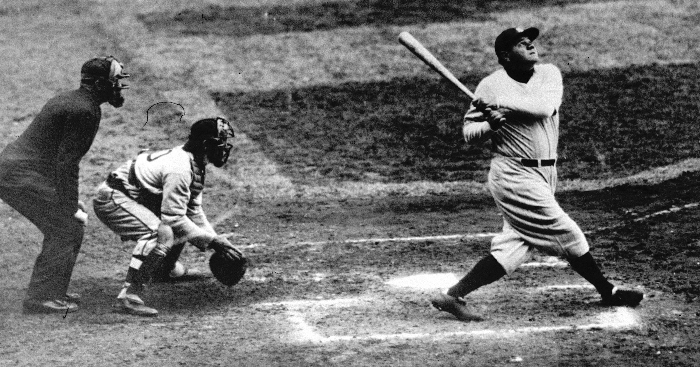

your title here
Home
All Time Players
All Time Home Runs
All Time Hits
All Time Strikeouts
All time Saves
All time managerial wins
Top 10 Greatest Baseball Players of All Time
What goes into ranking the Top 10 Greatest Players of All Time?
Identifying the top 10 greatest baseball players of all time may be difficult, but not impossible. Various factors will go into ranking the top 10 greatest players of all time. These factors will include:
- All Star Games
- MVP awards
- Longevity
- OPS+(takes a player's on-base plus slugging percentage and normalizes the number across the entire league)
- fWAR(defined as the number of wins a player adds to his team compared to a replacement level player)
- Fielding Percentage(a measure that reflects the percentage of times a defensive player properly handles a batted or thrown ball)
Babe Ruth
